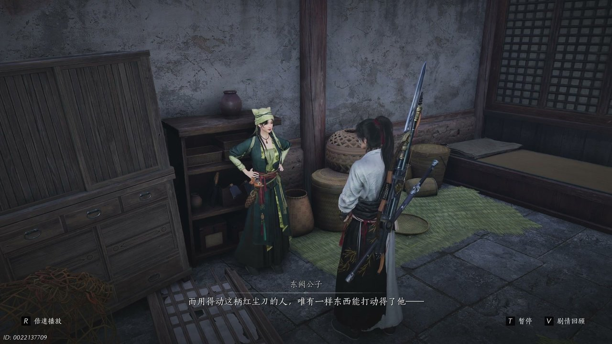
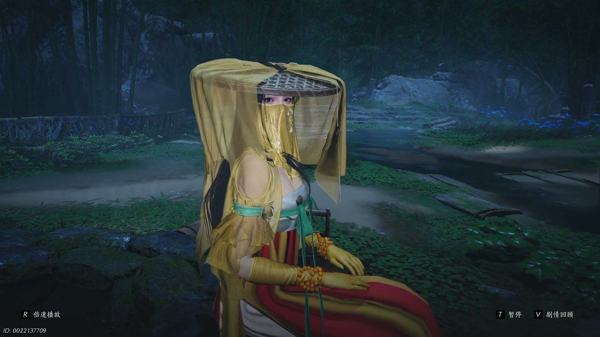

燕云背后的故事：第8集 第八集 黑财神

我知道好些朋友都是从短视频或者游戏广告里刷到过《燕云十六声》的。这是一款五代十国末年的开放世界武侠游戏，最特别的地方在于那股子扑面而来的历史沧桑感，酒肆瓦舍、烽火狼烟，好像一脚踩进去就能闻到那个乱世的味道。今天咱们就从开封城里头这桩钱荒怪事说起——官家在抓人，百姓在逃命，街面儿上看着热闹，暗地里却是刀光剑影。那个刚从不羡仙溜出来闯江湖的少东家，头一回正儿八经撞上江湖，就撞进了一口吃人不吐骨头的熔炉里头。

开封府地牢外头，夜沉得像泼了墨。几个衙役缩在墙根底下抽旱烟，火星子一明一灭照着他们脸上那层油汗，嘴上念叨着里头关的可是要犯，心里头门儿清——那女人是史大人眼里的活财神。师爷带着手下躲在柴房后头数银锞子，铜板碰着铜板的声音在夜里头格外脆生，数着数着还压着嗓子笑："看好那个女人，等她交出了升级捞油水，少不了你的。"说实在的，听到这儿我都替那些被关的百姓冤得慌——明明是被官府抓进来的，到头来还成了贪官兜里的买卖。铁链子在暗处哗啦一响，有人哭有人喊，可这帮人眼皮都不带抬的，只顾着把脏银往怀里揣。空气中那股铜臭混着地牢里渗出来的霉味，熏得人直犯恶心。就在这当口，墙角的阴影忽然动了一下。

元宝带着少东家和小福、阿禄他们摸到地牢入口的时候，正门的火把照得像白天，几十个官兵来回巡，兵刃的反光刺得人眼疼。"甩开他们了，"阿禄把地图往地上一铺，指着侧门那条线，"这边官兵少，可地牢不在这。"几个人猫着腰从排水沟翻进去，墙根底下那股子淤泥味儿混着铁锈气直冲鼻子，少东家差点没呕出来。落地一看，好家伙，满墙都是抓出来的血道子，深一道浅一道，有些地方还挂着碎布条。被关的百姓靠着墙根坐着，有的直勾勾盯着天花板傻笑，有的抱着脑袋含含糊糊地数"一个铜板两个铜板"，数着数着又开始哭。少东家蹲下去扶一个老大爷，那老爷子猛地一激灵，嘴里嚷着"钱是钱的声音，在熔炉里"，把人吓一跳。正琢磨这"熔炉"到底是啥地方，拐角传来两个看守的对话，一句"姓史的今天又运进来一批货"飘进耳朵。少东家眼神一凛，手已经按上刀柄了。

密室的门是用一道铁闩从外头别住的，少东家拿刀尖一挑就开了。里头比外头更黑，几盏油灯照着墙上糊的旧符纸，风一吹哗啦哗啦响。几个人正往里探，忽然听见外头有人说什么"未央城四大掌柜""黑白财神"——小福捂着嘴差点叫出来，东阙公子是明面上的财神，消失多年的那个隐秘黑财神，竟然就是开封府的史大人！更要命的是墙根底下用朱砂画了个标记，阿禄凑过去一看，倒吸一口凉气："这是绣金楼的玄凌波印，姓史的归顺绣金楼了。"话音刚落，头顶忽然刮过一阵邪风，蜡烛扑地灭了，黑暗中叮叮当当一阵铜钱响，少东家只觉脑袋嗡地一声，眼前发花，腿一软就往下跪。那铜钱声像有钩子似的，直往脑子里钻，迷迷糊糊看见满地银子在晃。幸亏小福上来掐住他人中猛喊"大哥哥醒醒"，他才一个激灵回过神。按说少东家也算见过些场面了，可这铜钱幻术邪门得很，他心里头一阵后怕。就在这时候，墙上那个花瓶忽然自己转了个个儿，咔嗒一声，一道暗门缓缓开了。

暗门后头是条窄道，几个人贴着墙摸过去，总算听见外头渡口的风声。可还没来得及松口气，火把呼啦一下照亮了整条通道，外头几十个官兵已经围上来了，领头的大块头举着朴刀喊："人在那边！"少东家攥紧了刀，盘算着怎么杀出去，小福的丈夫阿禄却忽然拽住他袖子，眼睛往渡口那边的船一指："咱们如果把船烧了，熔炉这边的守备肯定得去救火，到时候你趁机进去。"小福一蹦三尺高："声东击西！我可聪明吧！"说归说闹归闹，阿禄自己脸色也发白："我胆子小怕火，可这节骨眼上怕也没用。"三人商定，他们带着元宝去放火引开追兵，少东家沿着标记独自摸进熔炉。我看着他们分头行动，心想这几个孩子胆子是真大，换我被几十号人追着，腿肚子早转筋了。元宝胖乎乎的小身影提着一罐油往船帮子上一泼，火折子一亮，呼地一声船帆就着了。

渡口那边火光冲天，喊杀声、脚步声、水桶碰撞声乱成一片，守军果然被调走大半。少东家趁乱翻进熔炉侧门，一阵热浪扑面而来，汗珠子刚冒出来就被烤干了。顺着铁梯一层层往上爬，底下是翻涌的铁水，咕嘟咕嘟冒着泡，那热气熏得人睁不开眼。顶层高台上，史判官背着手站着，身后一排护卫刀出鞘，火光把他的影子拉得老长。少东家一脚踹开铁栅栏，刀尖直指他喉头："以大义诛不义，如何不胜？"史大人却连眼皮都没抬，慢悠悠捻着胡须："轻言取舍，是只闻大义之声，不闻百姓之声了。"你听听这话说的，他自己背叛朝廷投靠绣金楼，反倒摆出一副为民请命的嘴脸。少东家耳朵里嗡嗡响着地牢里那些疯子喊"钱"的声音，一刀劈在他脚前半寸，铁屑飞溅："你拿百姓的命当青石上的划痕，可他们生而微末就活该无声？"史大人脸上终于没了笑，退后半步一挥手，护卫涌上来挡住去路。可我看得明白，他怕了，他没想到一个毛头小子敢拿命跟他赌这一局。

从熔炉里活着出来之后，少东家在外头街巷口碰见了盈盈。月光底下这姑娘看着跟没事人一样，可一开口就把整盘棋的底牌掀了——大宋缺铜，市面上的铜钱一年比一年少，官府拿不出钱就抓人抵债，老百姓过一天算一天。盈盈说的"画饼充饥"根本不是骗局，是用官府的信誉把纸做成钱，拿新钱换旧铜，从根子上堵钱荒的窟窿。"铜能当钱，铁也能当钱，那纸怎么就不能当钱了？"她这话说得轻巧，可在场的人都知道有多重。第二天一大早，开封府的告示栏前头就排起了长队，老老小小攥着祖传的铜钱等着换新币，一个老太太把一把唐国通宝递过去，手直哆嗦，换了新钱出来眼泪吧嗒吧嗒掉："换新咧，好过日子。"旁边她儿子咧嘴笑："大哥说等有钱了顿顿吃白面馍。"少东家站在人群后头看着，忽然觉得这一路打打杀杀值了。可我又转念一想，盈盈这计划再好，挡得住未央城和绣金楼两头的刀子吗？

两人寻了个僻静地方坐下，盈盈脸上的笑渐渐收了起来。史判官这狗官，原本是温无痕的人，后来投了绣金楼改了面貌，顶了堂前策的主事——这些都还在意料之中。真正让少东家心头一紧的，是盈盈提起寒姨。"神仙渡覆灭之前，洛神寄信给我，想找一条退路。可那退路没用上，她人也不见了。"盈盈低着头，指尖在茶碗边上划圈，"我势单力孤查不到更多，你要是等得了，等我回未央城重整旗鼓，兴许能寻到她。"少东家哪等得了？他心里跟火烧一样，寒姨一手把他拉扯大，说失踪就失踪了。盈盈看他脸色，叹了口气："还有个地方，三个月内能查到下落——醉花阴。世上秘密最多的地方，可要打动里头那个人，得拿你的离人泪去换。"少东家一愣，那坛酒是他最值钱的家当了，可他还是点了头。盈盈起身要走，回头丢下一句"后会有期"，披风一卷就消失在巷子深处。

少东家揣着满脑子心事路过一家赌坊，听见里头吆五喝六的，本想绕开，门帘子一掀，一个女人靠在门框上冲他笑。绣金楼的千夜。她穿得不算扎眼，可往那儿一站，整条街的光都让她吸走了。"来一局？"她甩了甩手里的骰子，也不等少东家应声，自己先坐了牌桌。一桌人正赌得脸红脖子粗，千夜捏着牌，眼风一扫，"我认得你，神仙渡的少东家。"少东家后背一紧，面上却不动声色。千夜把筹码往前一推，全压。"你赌什么？"少东家问。"赌一个承诺。不违侠义，不为非作歹，你帮我做件事——现在不说是什么。"这话听着怎么都像坑，可她另一只手搁在桌上，掌心下压着一张画，画上的人高鼻深目，不像中原人。她说那是她梦里的故乡，让少东家帮她画完。少东家盯着那幅画看了半晌，牌一翻，跟了。烟雾缭绕里骰子滴溜溜转，揭开一看，千夜赢了。她笑得意味深长，凑过来低声说了句"明天见"，起身就走了，留下一屋子愣神的人。我跟你说，这女人一露面我就知道，事儿没完。
这一集看下来，我最大的感受就是开封这潭水比我想的深了十倍不止。上一集里我们只以为钱荒抓人是官府缺钱，到了这一集才发现史大人原来是黑财神，聚宝盆竟然是盈盈布的画饼新政，寒姨洛神下落不明指向醉花阴，绣金楼千夜又带着故乡画的委托横插一脚。千夜的赌局究竟为了什么？寒姨的退路为什么没能走成？盈盈单枪匹马回未央城，真能压得住那帮虎视眈眈的掌柜？这些线头拧成一股绳，少东家身上背的担子越来越沉了，可他站在牌坊底下抬头看月亮的时候，眼神里那股少年人的光还没灭。下集咱们跟着他去醉花阴会一会那个最爱听秘密的人。你觉得千夜藏在画里头的故乡到底有什么玄机？盈盈这一走还能不能再见面？评论区聊聊你的脑洞，点个关注别掉队，咱下回接着摆龙门阵！
关于我们
📱 公众号名称：三天游戏
✍️ 作者：曾三天
扫码关注公众号，获取每日最新资讯

商务合作与版权
商务合作 / 内容投稿 / 品牌推广
请关注公众号「三天游戏」后台留言联系
版权声明：本文由作者整理，转载需注明出处。